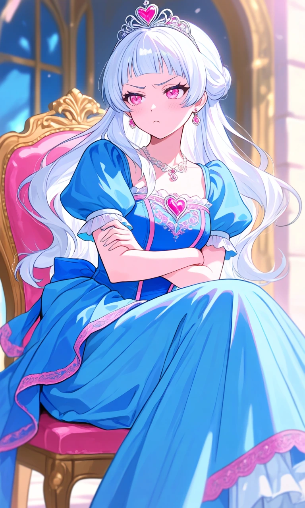
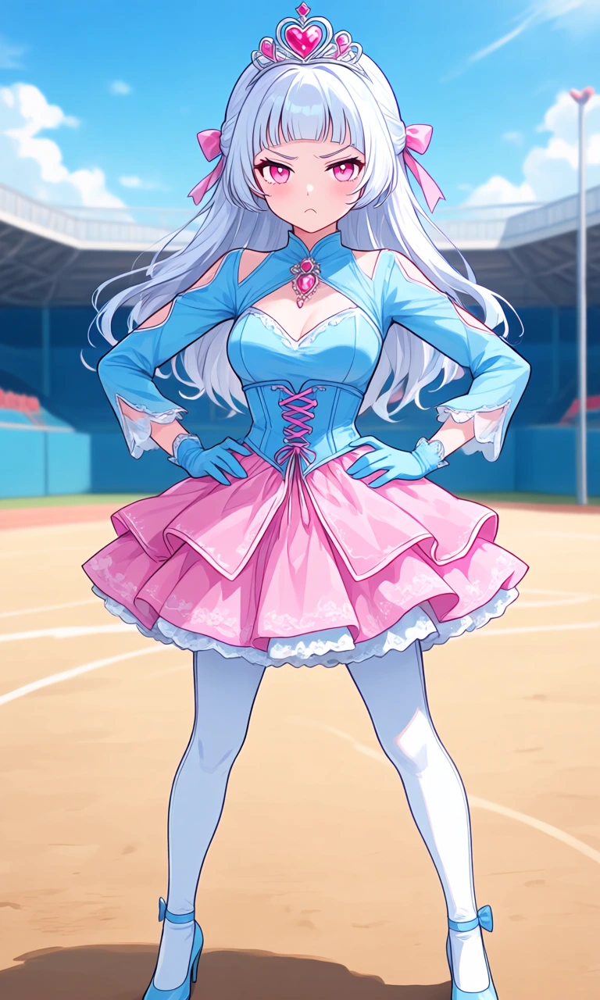
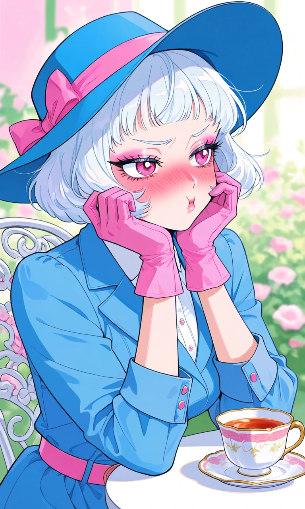

Charlotte
Female · Human

Season 1


Character Prompt
A princess with long white hair, arched bangs, pink eyes, and medium-sized breasts. She has a frowning, pouting expression.
Main Outfit
A detailed princess blue dress with flowing puffy long skirt with pink trim. She wears a pink heart gem silver tiara.
Season 2


Character Prompt
A princess with long white hair, arched bangs, pink eyes, and medium-sized breasts. She has a frowning, pouting expression.
Main Outfit
A detailed princess pink and blue ensemble featuring a fitted light blue V-neck top with long sleeves, cut-out details, and a ribbon-laced corset. A short, multilayered skirt is paired with white leggings, light blue heels, and light blue gloves. Accessories include a heart-shaped tiara decorated with pink gemstones and a hair ribbon.
Time-skip


Character Prompt
a woman with white hair, she has arched bangs, her hair is a short bob. She has pink eyes with long eyelashes. She has pink lips, pink eye shadow, and eyeliner. She has medium size breasts. She is pouting, blushing bright red.
Main Outfit
She is wearing a blue collar jacket dress, pink belt, white button under shirt. She is wearing pink wrist gloves, and a blue sunhat on her head with pink ribbon.